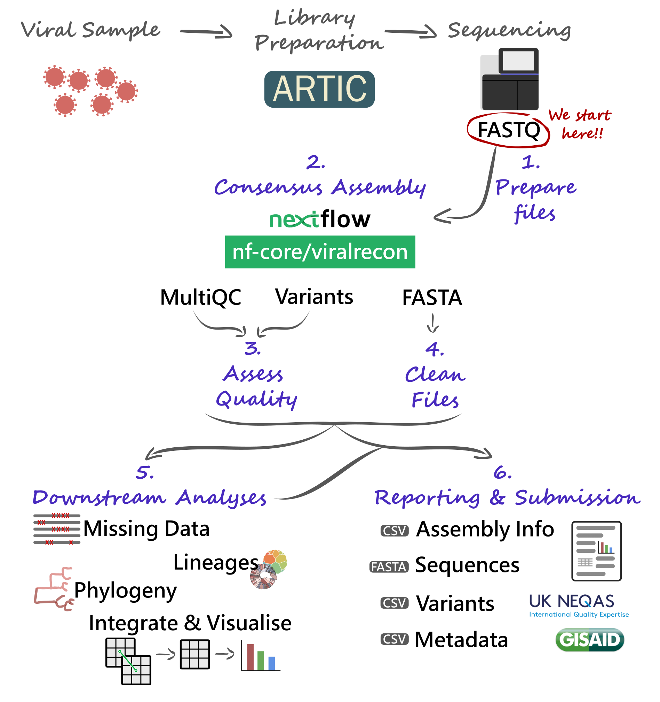

10 EQA (Exercise)
This section is an extended self-paced practice applying the concepts covered in previous sections.
By the end of this practice, you should be able to:
- Prepare all the files necessary to run the consensus pipeline.
- Run the viralrecon pipeline to generate FASTA consensus from raw FASTQ files.
- Assess and collect several quality metrics for the consensus sequences.
- Clean output files, in preparation for other downstream analysis.
- Assign sequences to lineages.
- Contextualise your sequences in other background data and cluster them based on phylogenetic analysis.
- Integrate the metadata and analysis results to generate timeseries visualisations of your data.

External Quality Assessment (EQA) is a procedure that allows laboratories to assess the quality of the data they produce, including its analysis. For genomic analysis of SARS-CoV-2, a standard panel of samples has been developed by the GenQA consortium, which is part of UK NEQAS, a non-profit that designs EQA protocols for a range of applications. GenQA’s panel of samples includes lab-cultured SARS-CoV-2 samples of known origin, enabling laboratories to assess whether their sequencing and bioinformatic pipelines correctly identify expected mutations and lineage assignments for each of the samples in the panel.
EQA programs such as this one help to provide assurance of the diagnostic testing results obtained by a lab. One of the key things to consider is that, for reliable assessment, samples should be processed in the same way as patient samples. Since these samples are for quality assessment, it may be tempting to assign the samples to more experienced staff, include extra checks, increase sequencing, etc. However, doing that would give a false impression of the performance of your own lab.
Evaluating the results of EQA sample processing is critical for labs to understand where their procedures can be improved. This may include staff training, purchase of new equipment, or updating the reagents and kits used for sample processing.
EQA panels are often updated, to reflect any new and emerging pathogens, allowing the labs to assess the suitability of the protocols used to detect them. It also helps raise awareness of any atypical variants of pathogens that may exist in the environment.
In this case study, we are going to analyse samples from the GenQA panel, to helps us assess the quality of our bioinformatic analysis and extract key pieces of information to be reported. Two panels are available, which include the following variants:
- 1x Alpha
- 1x Beta
- 1x Delta
- 2x Gamma
- 1x Omicron
- 2x Omicron BA.1
- 1x Omicron BA.2
- 2x Delta
- 1x Gamma
From the sequencing data analysis, we will address the following:
- What was the quality of the consensus sequence obtained?
- What lineage/clade was each of our samples assigned to? Did we identify the correct (expected) lineage?
- Which of the expected mutations were we able to detect? Where there any “false positives” or “false negatives”?
We should also produce several essential output files, which would usually be necessary to upload our data to public repositories:
- Consensus sequences (FASTA)
- Metadata and consensus sequence quality metrics (TSV)
- Variants (TSV)
10.1 Pipeline Overview
We will start our analysis with FASTQ files produced by our sequencing platforms (Illumina and Nanopore are considered here). These FASTQ files will be used with the nf-core/viralrecon Nextflow pipeline, allowing us to automate the generation of consensus sequences and produce several quality control metrics essential for our downstream analysis and reporting.
Critical files output by the pipeline will need to be further processed, including combining and cleaning our consensus FASTA files. Using these clean files, we can then proceed to downstream analysis, which includes assigning each sample to the most up-to-date Pango lineage, Nextclade clade and WHO designation. Finally, we can do more advanced analysis, including the idenfication of sample clusters based on phylogenetic analysis, or produce timeseries visualisations of variants of concern. With all this information together, we will have the necessary pieces to submit our results to public repositories and write reports to inform public health decisions.

10.2 Preparing Files
Before we start our work, it’s always a good idea to setup our directory structure, so we keep our files organised as the analysis progresses. There is no standard way to do this, but here are some suggested directories:
data→ contains the sequencing data for the particular run or project you are working on. Data may sometimes be stored in a separate server, in which case you may not need to create this directory. Generally, you should leave the original data unmodified, in case something goes wrong during your analysis, you can always re-run it from the start.results→ to save results of the analysis.scripts→ to save scripts used to run the analysis. You should always try to save all the commands you run in a script, this way you will have a record of what was done to produce the results, and it makes your life easier if you want to run the analysis again on a new set of data.report→ to save the final files and documents that we report to our colleagues or upload to public repositories.resources→ files that you download from the internet could be saved here. For example, the reference genome sequence, background data used for phylogenetics, etc. Sometimes you may share these resources across multiple projects, in which case you could have this folder somewhere else that you can access across multiple projects.
On our computers, we have a directory in ~/Documents/eqa_workshop, where we will do all our analysis. We already include the following:
data→ with the results of the EQA sample sequencing.resources→ where we include the SARS-CoV-2 reference genome, and some background datasets that will be used with some of the tools we will cover.scripts→ where we include some scripts that we will use towards the end of the workshop. You should also create several scripts during the workshop, which you will save here.sample_info.csv→ a table with some metadata for our samples.
10.2.1 Data
Regardless of which platform you used to sequence your samples, the analysis starts with FASTQ files (if you need a reminder of what a FASTQ file is, look at the Introduction to NGS section). However, the organisation of these files is slightly different depending on the platform, and is detailed below.
Typically, Nanopore data is converted to FASTQ format using the program Guppy. This software outputs the files to a directory called fastq_pass. Within this directory, it creates further sub-directories for each sample barcode, which are named barcodeXX (XX is the barcode number). Finally, within each barcode directory there is one (or sometimes more) FASTQ files corresponding to that sample.
You can look at the files you have available from the command line using:
ls data/fastq_passThe Illumina files come as compressed FASTQ files (.fq.gz format) and there’s two files per sample, corresponding to read 1 and read 2. This is indicated by the file name suffix:
*_1.fq.gzfor read 1*_2.fq.gzfor read 2
You can look at the files you have available from the command line using:
ls data/10.2.2 Metadata
A critical step in any analysis is to make sure that our samples have all the relevant metadata associated with them. This is important to make sense of our results and produce informative reports at the end. There are many types of information that can be collected from each sample (revise the Genomic Surveillance > Metadata section of the materials to learn more about this). For effective genomic surveillance, we need at the very minimum three pieces of information:
- When: date when the sample was collected (not when it was sequenced!).
- Where: the location where the sample was collected (not where it was sequenced!).
- How: how the sample was sequenced (sequencing platform and protocol used).
Of course, this is the minimum metadata we need for a useful analysis. However, the more information you collect about each sample, the more questions you can ask from your data – so always remember to record as much information as possible for each sample.
Note that programs such as Excel often convert date columns to their own format, and this can cause problems when analysing data later on. For example, GISAID wants dates in the format YYYY-MM-DD, but by default Excel displays dates as DD/MM/YYYY.
You can change how Excel displays dates by highlighting the date column, right-clicking and selecting Format cells, then select “Date” and pick the format that matches YYYY-MM-DD. However, every time you open the CSV file, Excel annoyingly converts it back to its default format!
To make sure no date information is lost due to Excel’s behaviour, it’s a good idea to store information about year, month and day in separate columns (stored just as regular numbers).
10.3 Consensus Assembly
At this point we are ready to start our analysis with the first step: generating a consensus genome for our samples. We will use a standardised pipeline called viralrecon, which automates most of this process for us, helping us be more efficient and reproducible in our analysis.
See Section 4.1, if you need to revise how the nf-core/viralrecon pipeline works.
10.3.1 Samplesheet
The first step in this process is to prepare a CSV file with information about our sequencing files, which will be used as the input to the viralrecon pipeline.
The pipeline’s documentation gives details about the format of this samplesheet, depending on whether you are working with Illumina or Nanopore data.
10.4 Consensus Quality
Once your workflow is complete, it’s time to assess the quality of the assembly.
See Section 5.2, if you need to revise how to assess the quality of consensus sequences.
10.4.1 Coverage
At this stage we want to identify issues such as:
- Any samples which have critically low coverage. There is no defined threshold, but samples with less than 85% coverage should be considered carefully.
- Any problematic regions that systematically did not get amplified (amplicon dropout).
10.4.2 Variants
The viralrecon pipeline outputs a table with information about SNP/Indel variants as a CSV file named variants_long_table.csv. It is important to inspect the results of this file, to identify any mutations with severe effects on annotated proteins, or identify samples with an abnormal high number of “mixed” bases.
10.4.3 Clean FASTA
The viralrecon pipeline outputs each of our consensus sequences as individual FASTA files for each sample (look at the FASTA Files section if you need a reminder of what these files are). However, by default, the sample names in this file have extra information added to them, which makes some downstream analysis less friendly (because the names will be too long and complicated).
To clean up these files, we will do two things:
- Combine all the individual FASTA files together.
- Remove the extra text from the sequence names.
10.4.4 Missing Intervals
When we generate our consensus assembly, there are regions for which we did not have enough information (e.g. due to amplicon dropout) or where there were mixed bases. These regions are missing data, and are denoted as ‘N’ in our sequences. Although we already determined the percentage of each sequence that is missing from the MultiQC report, we don’t have the intervals of missing data, which can be a useful quality metric to have. In particular, we may want to know what is the largest continuous stretch of missing data in each sample.
10.5 Downstream Analyses
Now that we have cleaned our FASTA file, we can use it for several downstream analysis. We will focus on these:
- Lineage assignment: identify if our samples come from known lineages from the Pangolin consortium.
- Phylogeny: produce an annotated phylogenetic tree of our samples.
- Clustering: assess how many clusters of sequences we have, based on a phylogenetic analysis.
- Integration & Visualisation: cross-reference different results tables and produce visualisations of how variants changed over time.
10.5.1 Lineage Assignment
See Section 6.1, if you need to revise how lineage assignment works.
Although the Viralrecon pipeline can run Pangolin and Nextclade, it does not use the latest version of these programs (because lineages evolve so fast, the nomenclature constantly changes). Although it is possible to configure viralrecon to use more recent versions of these tools, it requires more advanced use of configuration files with the pipeline.
Alternatively, we can run our consensus sequences through the latest versions of Nextclade and Pangolin. There are two ways to do this: using their respective web applications, or their command-line versions. For this task, we recommend that you use the command line tools (this will ensure our downstream analysis works well), but we also provide the option to use the web apps for your reference.
To run the command-line version of these tools, there are two steps:
- Update the datasets of each software (to ensure they are using the latest lineage/clade nomenclature available).
- Run the actual analysis on your samples.
We will use the exercises below to see what the commands to achieve this are.
These exercises are optional - during the workshop please use the command line version of the tools.
10.5.2 Phylogeny
See Section 7.1, if you need to revise how to build phylogenetic trees.
Although tools such as Nextclade and civet can place our samples in a phylogeny, sometimes it may be convenient to build our own phylogenies. This requires three steps:
- Producing a multiple sequence alignment from all consensus sequences.
- Tree inference.
- Tree visualisation.
10.5.3 Clustering (Optional Section)
The software civet (Cluster Investigation and Virus Epidemiology Tool) can be used to produce a report on the phylogenetic relationship between viral samples, using a background dataset to contextualise them (e.g. a global or regional sample of sequences) as well as metadata information to enable the identification of emerging clusters of samples.
Civet works in several stages, in summary:
- Each input sequence is assigned to a “catchment” group. These are groups of samples that occur at a given genetic distance (number of SNP differences) from each other.
- Within each catchment group, a phylogeny is built (using the
iqtree2software with the HKY substitution model). - The phylogeny is annotated with user-input metadata (e.g. location, collection date, etc.). The results are displayed in an interactive HTML report.
One of the critical pieces of information needed by civet is the background data, to which the input samples will be compared with. These background data could be anything the user wants, but typically it’s a good idea to use samples from the local geographic area from where the samples were collected. For example, a national centre may choose to have their background data composed of all the samples that have been sequenced in the country so far. Or perhaps all the samples in its country and other neighbouring countries.
One way to obtain background data is to download it from GISAID. An example of how to do this is detailed in the civet documentation. We have already downloaded the data from GISAID, so we can go straight to running our civet analysis.
10.6 Integration & Visualisation
At this point in our analysis, we have several tables with different pieces of information:
sample_info.csv→ the original table with metadata for our samples.results/viralrecon/multiqc/medaka/summary_variants_metrics_mqc.csv→ quality metrics from the MultiQC report generated by the viralrecon pipeline.results/nextclade/nextclade.tsv→ the results from Nextclade.results/pangolin/pango_report.csv→ the results from Pangolin.- (optional)
results/civet/master_metadata.csv→ the results from the civet analysis, namely the catchment (or cluster) that each of our samples was grouped into.
Each of these tables stores different pieces of information, and it would be great if we could integrate them together, to facilitate their interpration and generate some visualisations.
We will demonstrate how this analysis can be done using the R software, which is a popular programming language used for data analysis and visualisation. Check the Quick R Intro appendix for the basics of how to work with R and RStudio.
10.7 EQA Panels
The analysis we have done so far is applicable to any new sequences that you want to process. However, we have also been using a pre-defined panel of samples to be used as part of an External Quality Assessment (EQA) process. This allows us to assess whether our bioinformatic analysis identified all the expected mutations in these samples, as well as assigned them to the correct lineages.
To do this, requires to compare the mutations we detected in our EQA samples to the expected mutations provided to us. From this, we will be able to calculate True Positives (TP), False Positives (FP) and False Negatives (FN), and calculate two performance metrics:
- Precision = TP / (TP + FP) → what fraction of the mutations we detected are true?
- Sensitivity = TP / (TP + FN) → what fraction of all true mutations did we detect?
There can be cases where one of these metrics is high and the other one lower. For example, if you have a high-coverage genome (say >95%) but lots of sequencing errors, you may have a high sensitivity (you manage to detect all true mutations), but low precision (you also detect lots of false positives, due to sequencing errors). Conversely, if you have a low-coverage genome (say <50%) but very high-quality sequencing, you may have low sensitivity (you missed lots of true mutations, because of missing data), but high precision (those mutations that you did manage to identify were all true, you didn’t have many false positives).
If you are submiting your samples to GenQA’s platform, they will also provide with a general accuracy score called F-score. This is calculated as the harmonic mean of precision and sensitivity:
\(F_{score} = \frac{2 \times Precision \times Sensitivity}{Precision + Sensitivity}\)
A high F-score is indicative of both high precision and sensitivity, whereas a lower score indicates that at least one of those metrics are low.
10.8 Reporting
Finally, we have come to the end of our analysis. So, all that is left is to report our results in the most informative way to our colleagues and decision-makers. You may already have established reporting templates in your institution, and if that’s the case, you should use those. Alternatively, we will look at a suggested template, based on the reports done by the UK Health Security Agency (UKHSA).